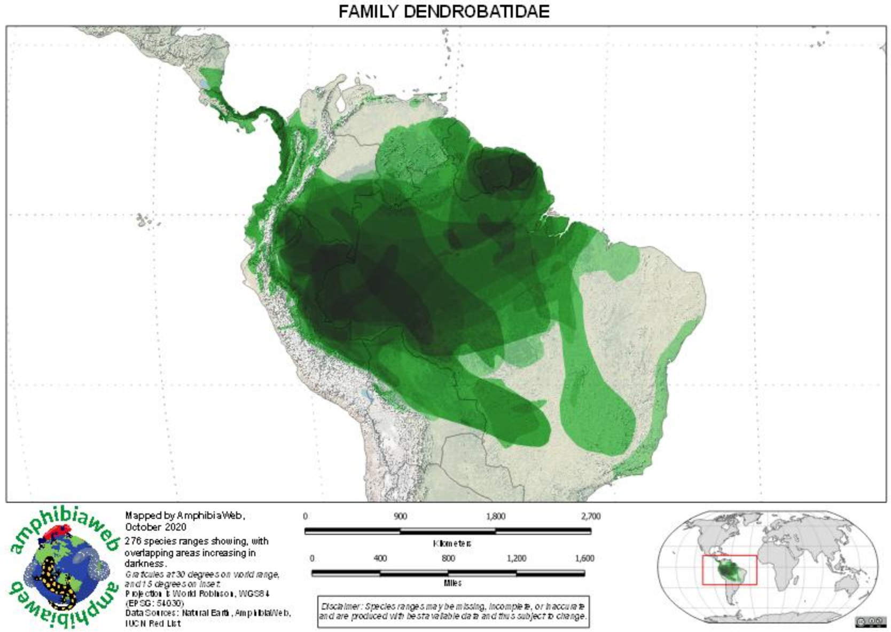
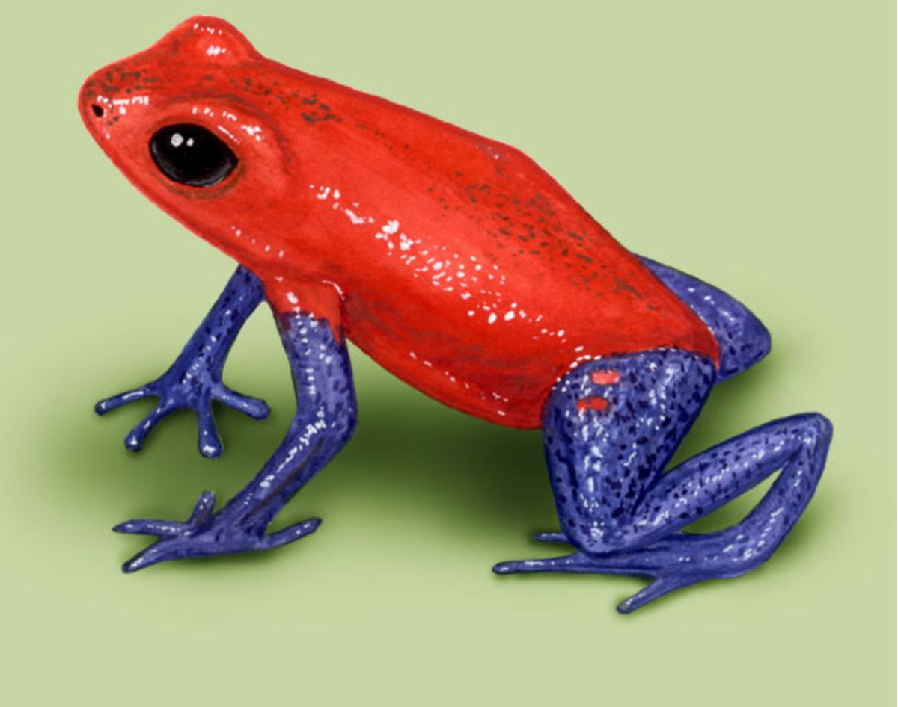
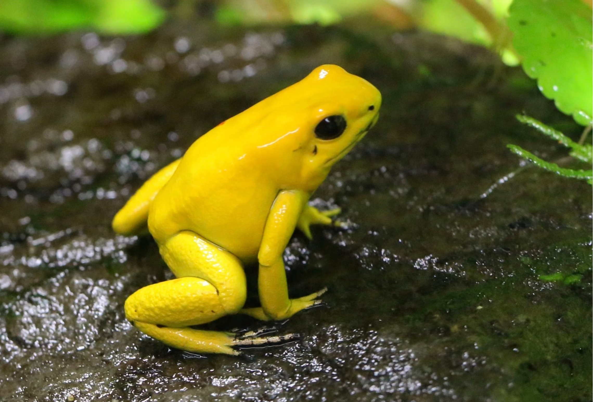

All About Poison Dart Frogs
Introduction

Poison dart frogs are a group of brightly colored frogs that are native to Central and South America. They are known for their toxic secretions and the use of their poison for hunting by indigenous tribes.
Distribution
Poison dart frogs are found in Central and South America, from Nicaragua and Costa Rica in the north to Brazil, Bolivia, and Peru in the south.
Varieties of Poison Dart Frogs
| Species | Description | Image |
|---|---|---|
| Blue Poison Dart Frog | The blue poison dart frog or blue poison arrow frog or Okopipi (Dendrobates tinctorius "azureus") is a poison dart frog found in the forests surrounded by the Sipaliwini savanna, which is located in southern Suriname and adjacent far northern Brazil. |  |
| Strawberry Poison Dart Frog | The strawberry poison frog or strawberry poison-dart frog (Oophaga pumilio) is a species of small poison dart frog found in Central America. It is common in its range, which extends from eastern central Nicaragua through Costa Rica and northwestern Panama. |  |
| Golden Poison Dart Frog | The golden poison frog (Phyllobates terribilis), also known as the golden frog, golden poison arrow frog, or golden dart frog, is a poison dart frog endemic to the Pacific coast of Colombia. |  |
Conservation Status
Due to habitat loss, several species of poison dart frogs are considered threatened. Three species are listed as critically endangered by the IUCN, four species are listed as endangered, and thirteen species are listed as vulnerable.
Interesting Facts
- Poison dart frogs get their name from the indigenous tribes that use their poison to hunt.
- The poison of the Golden Poison Dart Frog is so toxic, it can kill up to 10 grown men.
- Despite their toxicity, poison dart frogs are popular in the pet trade.